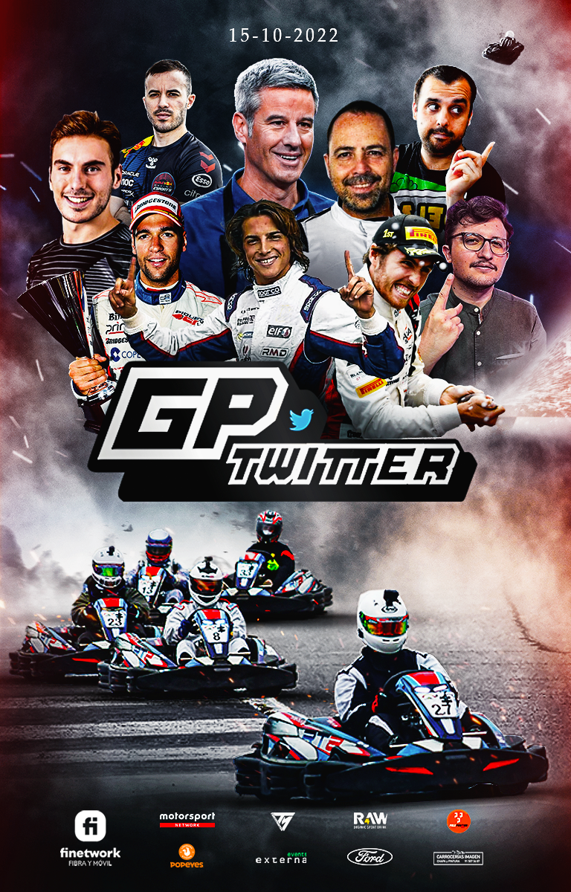

<section class="bg-white dark:bg-gray-900">
    <div class="gap-8 items-center py-8 px-4 mx-auto max-w-screen-xl xl:gap-16 md:grid md:grid-cols-2 sm:py-16 lg:px-6">
        
        
        <div class="mt-4 md:mt-0">
            <h2 class="mb-4 text-4xl tracking-tight font-extrabold text-gray-900 dark:text-white">¿Qué es el GP Twitter?</h2>
            <p class="mb-6 font-light text-gray-500 md:text-lg dark:text-gray-400">Se trata de un evento que reúne tanto a los mayores influencers del panorama de TWF1 España como a miembros de la comunidad que comparten la misma pasión, el automovilismo, con un grado similar de locura.</p>
       
            <h2 class="mb-4 text-4xl tracking-tight font-extrabold text-gray-900 dark:text-white">Formato</h2>
            <p class="mb-6 font-light text-gray-500 md:text-lg dark:text-gray-400">90 participantes se darán cita en el Karting Club Los Santos, en Los Santos de la Humosa, el próximo sábado 15 de octubre. Se dividirán en 3 grupos de 30 en función del nivel y formarán un total de 15 equipos, con 2 miembros de cada grupo.</p>
            <p class="mb-6 font-light text-gray-500 md:text-lg dark:text-gray-400">Se disputarán 9 sesiones de karting: una clasificación y dos carreras por cada grupo. En todas ellas se repartirán puntos, del 1º al 30º. Así, cada participante pilotará alrededor de 40 minutos, con tiempos muertos entre sesiones para poder descansar y analizar su última sesión.</p>
       
        </div>
    </div>
</section>